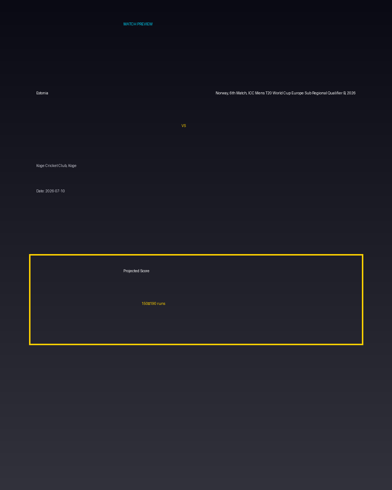

Estonia vs Norway, 6th Match, ICC Mens T20 World Cup Europe Sub Regional Qualifier B, 2026
Date: 2026-07-10
Venue: Koge Cricket Club, Koge


Form Guide
Estonia: 🟩 🟥 🟩 🟩 🟥
Norway, 6th Match, ICC Mens T20 World Cup Europe Sub Regional Qualifier B, 2026: 🟥 🟩 🟥 🟥 🟩
Pitch Report
Balanced wicket with moderate scoring conditions.
Projected Score
150–190 runs
Key Players
- Estonia Key Batter — Batsman
- Estonia Strike Bowler — Bowler
- Norway, 6th Match, ICC Mens T20 World Cup Europe Sub Regional Qualifier B, 2026 Key Batter — Batsman
- Norway, 6th Match, ICC Mens T20 World Cup Europe Sub Regional Qualifier B, 2026 Strike Bowler — Bowler
Advanced Win Probability
Estonia: 64.3%
Norway, 6th Match, ICC Mens T20 World Cup Europe Sub Regional Qualifier B, 2026: 35.7%
AI Match Prediction
Based on venue conditions, a projected scoring range of 150–190 runs, recent form (with Estonia appearing slightly stronger), and the pitch profile ('Balanced wicket with moderate scoring conditions.'), this matchup appears to present Estonia entering as clear favorites. Early momentum and top-order execution will likely determine the winner.
